Префектура Нагасаки · Хасами · керамика и цветы
Хасами: парк при фарфоровой мастерской и цветочная лавка под соломенной крышей
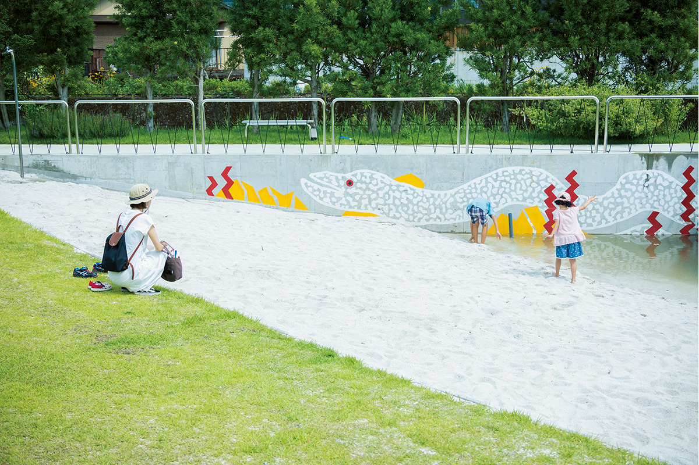
Хасами, небольшой город на севере префектуры Нагасаки, известен прежде всего фарфором. Здесь можно провести полдня в парке, который местная фарфоровая компания построила для детей и гостей, а потом заехать в цветочную лавку под огромной соломенной крышей.
Парк
HIROPPA: долг, который возвращают городу
Посуду из Хасами, хасами-яки, делают по старой схеме разделения труда: одни мастерские формуют, другие расписывают, третьи обжигают. Компания Maruhiro в этой цепочке работает как продюсер и оптовик: придумывает новые изделия и продаёт готовую посуду. Её глава Кёхэй Баба и построил HIROPPA, зелёный парк с магазином фарфора и кафе, где всё время гуляет ветер.
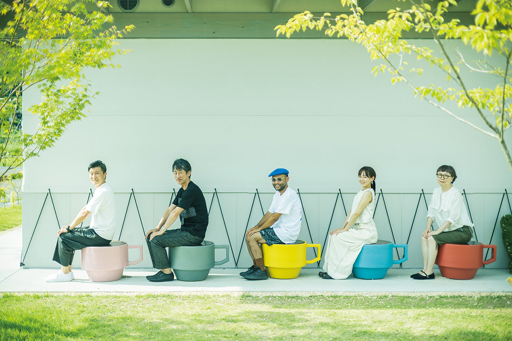
Когда Кёхэй Баба принял семейное дело, компания была на грани краха. Спасла её марка HASAMI с функциональным дизайном: например, кружки-блоки, которые можно ставить друг на друга. Они стали хитом, и с тех пор Maruhiro выпускает вещи, где традиционное ремесло встречается со вкусом самого Бабы, и этим заметно подняла ценность фарфора Хасами.
«Когда я вернулся домой, я совсем ничего не знал о керамике. Но школьный друг отца, который отвечал за производство, учил меня с азов и помогал новичку строить свою марку. Он тогда сказал: „Я в долгу перед твоим дедом и отцом, поэтому возвращаю долг тебе. А ты верни его следующему поколению“. С тех пор я думаю, как вернуть его по-своему. Если не останется города, не останется и ремесла. Что сделать, чтобы люди приезжали не только за посудой, но и ради самого Хасами? Дальше я хочу больше заниматься такими местами, как HIROPPA, куда может прийти любой»
Кёхэй Баба, глава Maruhiro
HIROPPA задумывали как частный парк для будущего хасами-яки и для детей округи, а получилось место, куда едут туристы. В 2022 году парк получил специальный приз премии Западного Кюсю за развитие туризма и городской среды, которую учредили к открытию синкансэна «Камомэ».
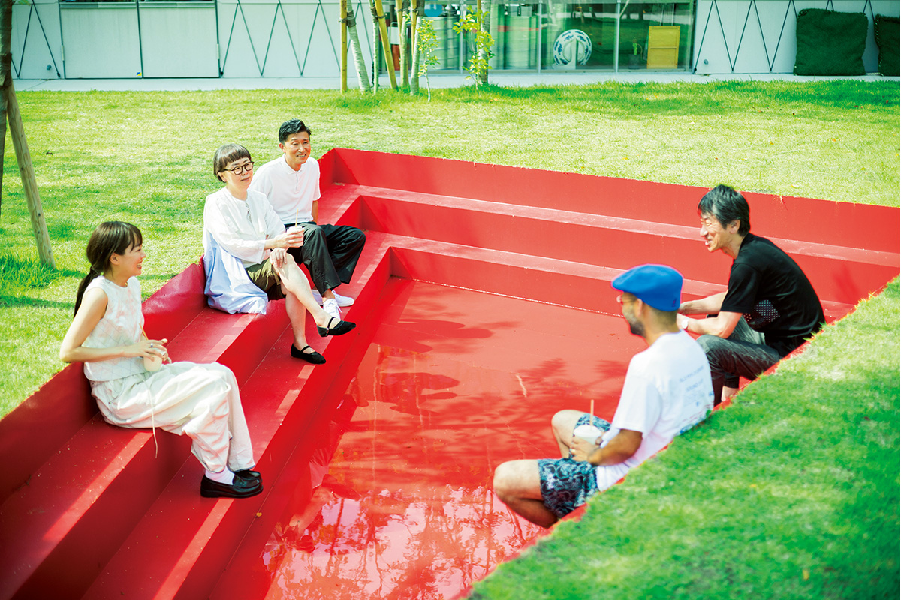
Под парк купили участок около 4000 квадратных метров. Дорожки сделаны без перепадов, и весь парк можно объехать на инвалидной коляске. Одной из причин взяться за проект, по словам Бабы, стало то, что он сам стал отцом.
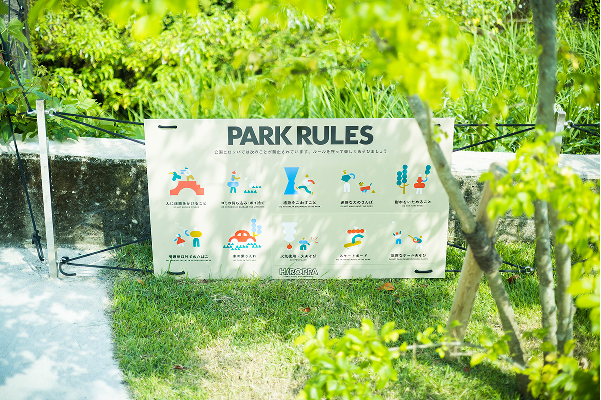
Магазин без порога
Магазин и кафе стоят прямо в парке, и граница между залом и газоном почти не чувствуется.
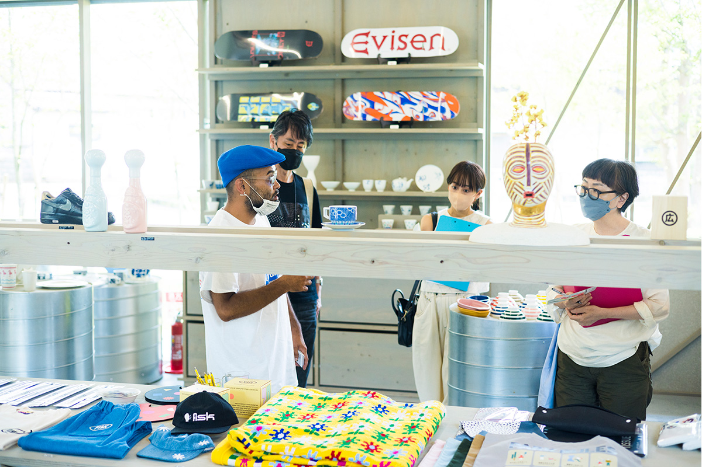
На полках весь мир Бабы: от классики марки HASAMI до совместных работ с художниками.
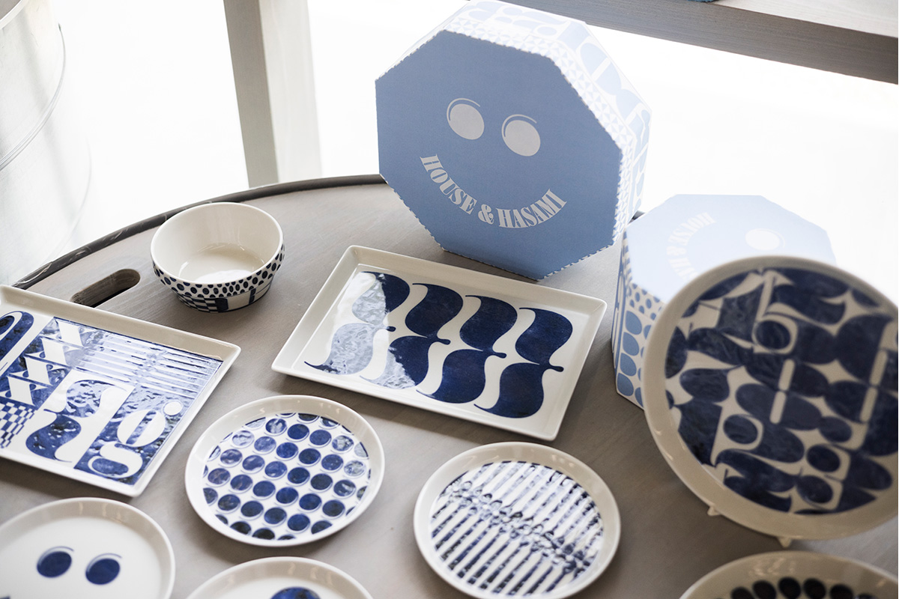
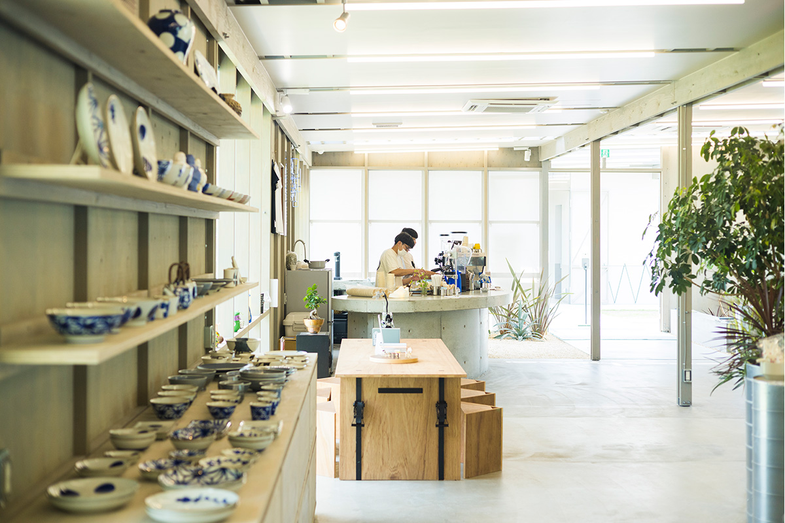
OUCHI и KOUBA
В нескольких минутах пешком от парка стоит OUCHI, дом для временных магазинов и мероприятий. В 2022 году до конца октября здесь работала лавка какигори, колотого льда с сиропом.
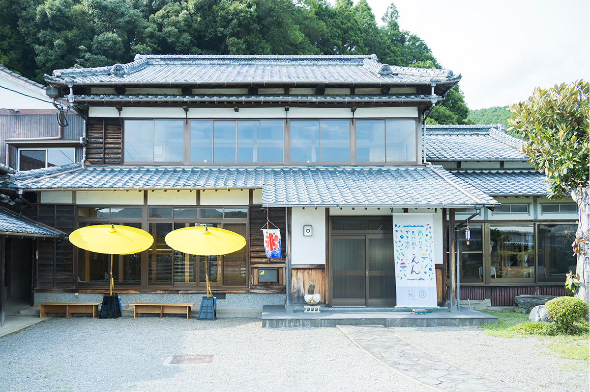
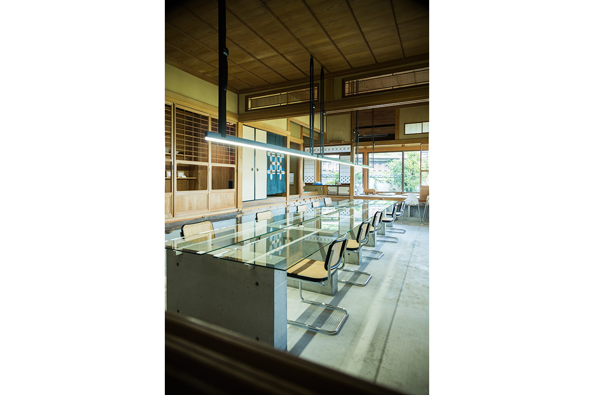
Напротив OUCHI находится KOUBA, склад и офис компании. В 2022 году здесь собирались проводить ярмарки керамики, а за зданием раскинулось поле подсолнухов.
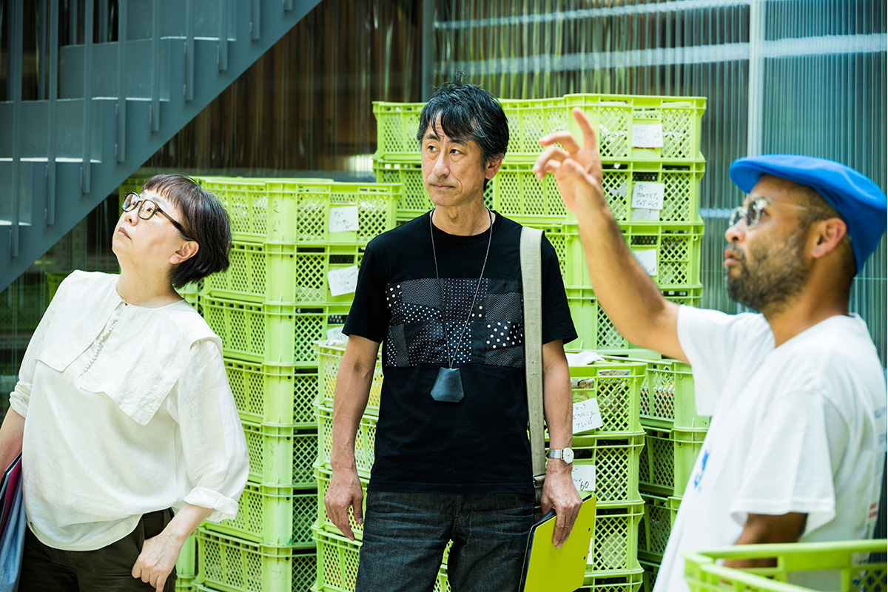
HIROPPA
- Адрес
- префектура Нагасаки, уезд Хигаси-Соноги, Хасами, Юмута-го, 682
- Телефон
- +81 956-37-8666
- Часы работы
- 10:00–18:00
- Выходные
- нерегулярно
- Как добраться
- на машине около 5 минут от развязки Хасами-Арита скоростной дороги Западного Кюсю, от станции JR Арита около 10 минут на такси
Цветы
«Хана Сайкай»: лавка под соломенной крышей
Компания «Сайкай Энгэй» из Хасами работает с 1972 года: сегодня садовники занимаются у неё ландшафтом, флористы цветочной лавкой, а дизайнеры проектированием. В 2022 году, к 50-летию, компания перестроила свою цветочную лавку «Хана Сайкай» и накрыла её большой крышей из пшеничной соломы.
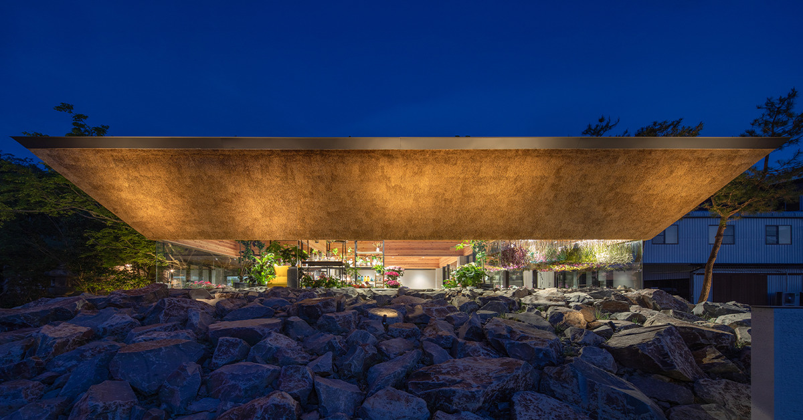
Главное слово для этого места «круговорот». Глиняные стены, солома, камни и растения взяты из округи. Пространство продумал садовник, который следит за сменой сезонов, погоды, утреннего и вечернего света, а флористы в этом пространстве собирают букеты, прислушиваясь к тому, что хочет сказать гость. Круговорот здесь понимают в трёх смыслах.
Круговорот времени
Сад спроектировал глава садовой мастерской «Нива Сайкай». Деревья и травы подстрижены так, чтобы ими можно было любоваться годами, пока они растут. Каждое растение и каждый камень поставлены с расчётом на то, как они будут выглядеть в разную погоду и при разном свете в течение дня. Получился сад в духе старой японской эстетики, где природа и архитектура подчёркивают друг друга, и каждый раз он выглядит немного иначе.
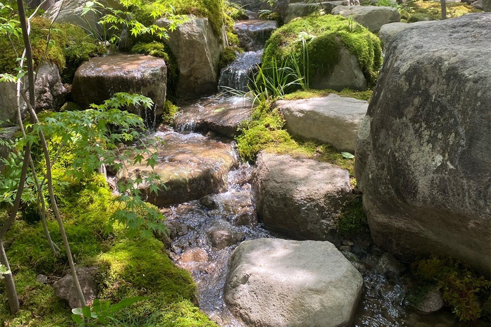
Круговорот материалов
Для крыши взяли пшеничную солому: то, что остаётся после уборки пшеницы. Сегодня ей почти не находят применения и часто просто выбрасывают. Старую солому можно пустить на удобрение, так что материал используется целиком. Садовники издавна следуют простому принципу «делать из местного и возвращать местной земле», и лавка показывает, как этот принцип работает и как красиво стареют природные материалы.
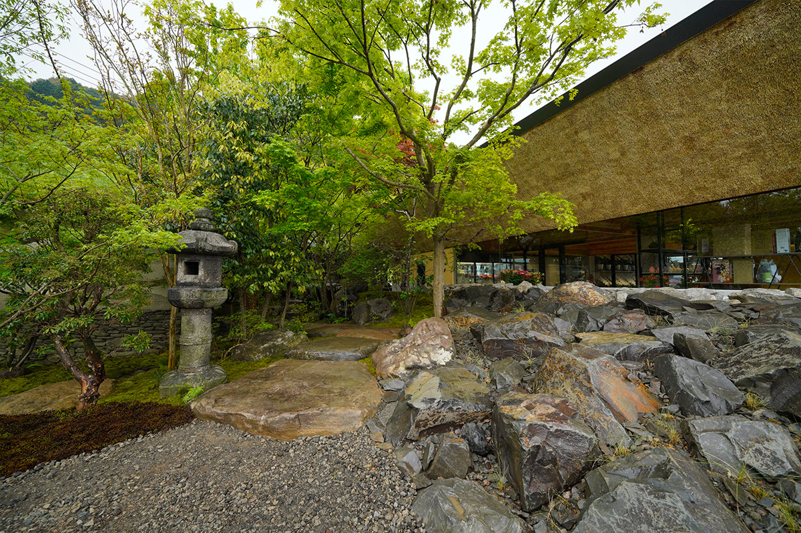
Круговорот ремесла
Когда-то соломенные крыши можно было увидеть и в Хасами, и по всей Японии. Работы шли под руководством мастера соломенных крыш: местную культуру соломенной кровли и японскую строительную технику обновили. Солому вместе с местными жителями собрали с одного гектара пшеничных полей.
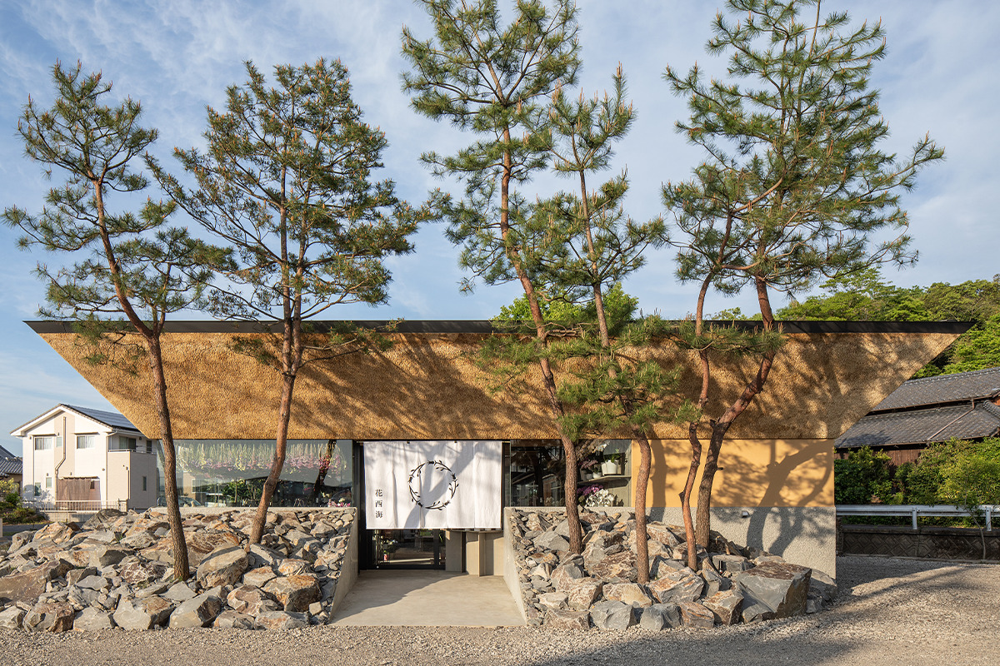
Лавку задумали не только для местных жителей, но и для гостей из других префектур и из-за границы. В 2022 году компания собиралась выпускать собственные товары, которые могли появиться только в Хасами, городе фарфора.
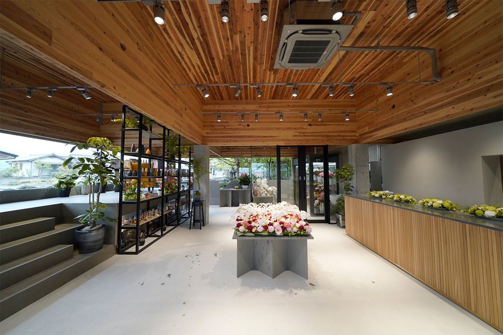
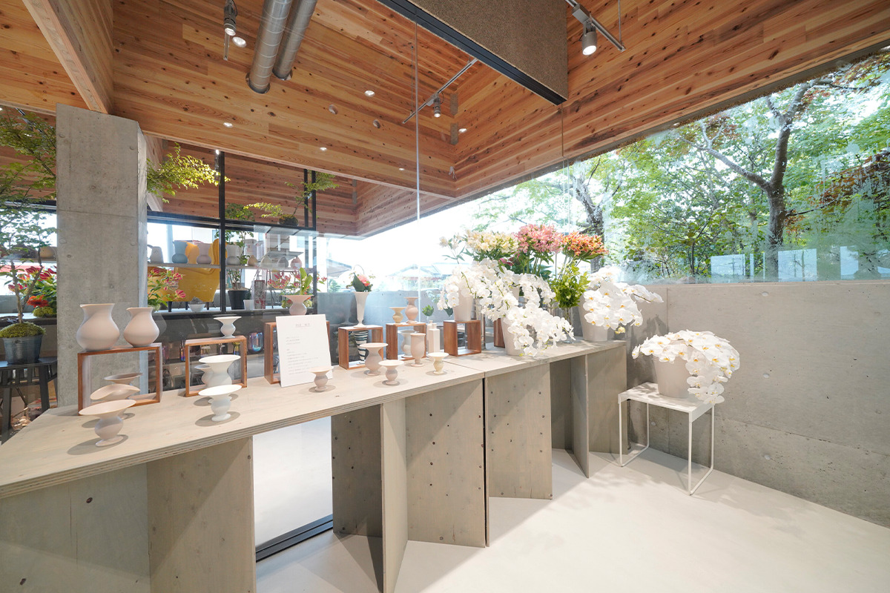
Лавка стоит у подножия покрытых лесом холмов, а перед фасадом лежит россыпь крупных камней.
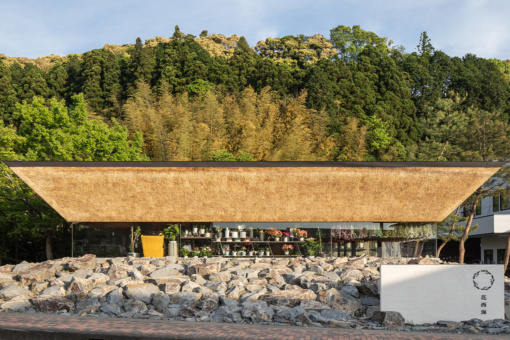
«Хана Сайкай»
- Адрес
- префектура Нагасаки, уезд Хигаси-Соноги, Хасами, Осикисэ-го, 1661
- Телефон
- +81 956-85-6539
- Часы работы
- 10:00–18:00
- Выходные
- вторник
Фото: Хиромаса Оцука.